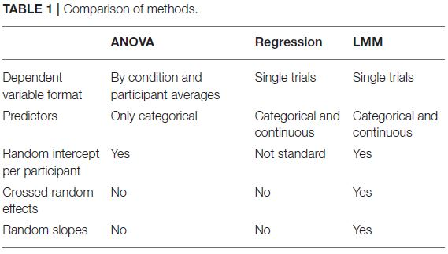

Single-Trial EEG Analysis
Mixed Models and Friends
1 General stuff
- Usual method for estimating ERPs: Extract time-locked epochs from the continuous EEG signal, align them, and compute their point-by-point average.
- Detailed tracing of processing at each electrode across conditions.
- Many characterised components.
- Large body of literature to compare with.
1.1 Comparison of Methods

1.1.1 Averaging limitations
Usually: ANOVA, averaging within conditions and participants
1.1.1.1 Limited by …
- Limited by the implicit assumption that every participant’s average has the same quality and that the same number of observations constitutes each of those averages.
- Differences in performance accuracy and artifact rejection \(\to\) Unequal numbers of trials contributing to individual averages within participants and conditions.
- But: All these averages have the same weights in an ANOVA.
Limited by the implicit assumption that experimental manipulations yield uniform effects across all participants and items.
Limited by the dependency on discrete factor levels and its resulting inability to test for parametric effects.
1.1.1.2 Limiting …
- Experimental design: Small set of discrete stimulus categories needed.
- It needs to be ensured that features of no interest are the same across sets.
- Problem with multiple events in close temporal proximity: ERPs will overlap in EEG and resultung ERP estimations.
- Which portions of final waveform attributable to which event?
1.1.2 Some alternatives
- According to Smith & Kutas (2015a) all special cases of the rERP framework, as is the averaging method (which is merely a special case of the least squares method underlying regression).
- Multiple regression to analyze the average amplitude of the EEG extracted from a window from either single trials or single-item ERPs.
- Allows for post hoc control of multiple simultaneous discrete and continuous covariates
- But: Pre-specified analysis windows \(\to\) cannot produce temporally detailed waveforms.
- Separate regression model at each possible latency.
- Can handle multiple covariates while still providing information on the time course of effects.
- But: No provision for handling overlap correction.
1.1.3 Advantages of mixed models
- Can deal with unequal numbers of observations per cell and missing values.
- Regularised estimates: More robust, avoiding type I errors.
- Many observations needed for averages per discrete category; but not when discrete variables can be left intact.
- E.g. when investigating the effect of reward on feedback related potentials: At least 30 trials per reward magnitude needed in order to obtain reliable ERPs.
- With a regression-based approach: Same overall number of trials, but reward could be varied continuously from low to high.
- Linear, but also quadratic or cubic effects of reward across that range could be tested.
1.2 Determining Time Windows
- Determining the right time-windows and regions of interest (ROIs) to test group-level effects is a challenge.
- The problem is amplified when new effects are explored and there is no substantial previous literature to help develop direct hypotheses on the nature of those effects (e.g., time course or spatial distribution).
- One statistically robust way to determine suitable time windows and electrode sites are cluster-based permutation tests (CBPT) as implemented in FieldTrip.
- In a nutshell, this approach tests the null hypothesis that observations for different conditions are drawn fromthe same distribution and are therefore exchangeable.
- Therefore, if observing similar effects under random assignment of condition labels is highly unlikely (less than 5% of the permutations show them), this hypothesis is rejected and the observed condition effect is considered significant.
- The cluster-based procedure further makes use of the EEG property that observations on adjacent sites and time points are often correlated, because a real effect most likely affects multiple electrodes similarly and persists across several tens to hundreds of milliseconds (or sampling points).
- However, they only roughly stick to the time windows yielded by CBPTs (see details here), so it still remains a rather arbitrary decision (which seems okay).
1.3 Limitations
- So far only been used for the analyses of distinct time windows, but data structure also allows for multiple robust regression on multiple time points to analyze the time course of effects
- “However, bear in mind that only LMMs simultaneously account for random effects and might as well be conducted at multiple time points and electrodes. However then, robust estimates of Type I error need to be assessed. Statistical significance for LMMs can also be estimated using Markov chain Monte Carlo (MCMC) sampling, which would be more appropriate for multiple comparisons.”
- Not what we want to do, I guess.
- “However, bear in mind that only LMMs simultaneously account for random effects and might as well be conducted at multiple time points and electrodes. However then, robust estimates of Type I error need to be assessed. Statistical significance for LMMs can also be estimated using Markov chain Monte Carlo (MCMC) sampling, which would be more appropriate for multiple comparisons.”
- Still problematic: component overlap. Specifically, and a problem of all methods applying statistical tests of multiple variables on local ERP distributions (e.g., mean amplitude at a ROI or peak amplitudes), the statistically observed effects are not necessarily distributed the way the ERP component of interest is. Statistically reliable effects might as well stem from a spatially overlapping different ERP component.
- Proof of principle for LMM analyses: Run the final model on all electrodes and to plot the topography of the fixed effects estimates to visually examine whether they show the expected distribution. More sophisticated approaches: Smith & Kutas (2015b).
- CBPTs do not have a problem with this, but are applicable to categorical variables with few factor levels.
- Depends on what our variables of interest are …
- “Further, CBPT as implemented here operates on participant averages and therefore holds the same problems as other approaches aggregating within subjects and conditions first. Therefore, results from CBPT might differ from those obtained using LMMs with a better control of additional sources of variance.”
1.4 Conclusion
- Single trial based LMM analyses yield mostly comparable results to ANOVA and regression
- When results differ: LMMs are more sensitive than ANOVAs and both more sensitive and more specific than regressions.
- Brain behavior analyses often only applicable with single trial ERPs and hence LMMs and regression.
- Using continuous predictors, as for categorical predictors in the other analyses, LMMs outperform ordinary regression.
1.5 TO DO
- Get Frömer, Maier, & Abdel Rahman (2018) data and see if I can reproduce the analyses.
- Maybe with preprocessing in BrainVision Analyzer instead of Matlab?
- Apply modified procedure to Laura’s data.